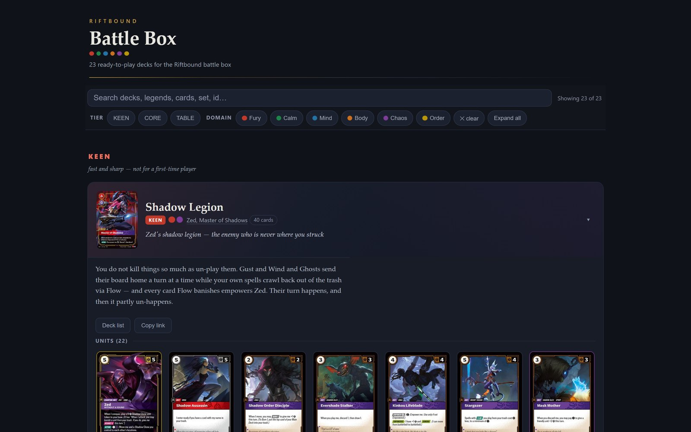
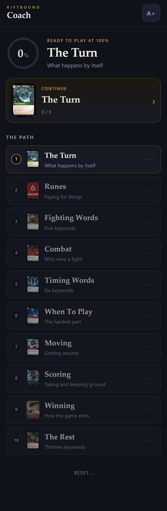

Reference site + phone trainer · August 2026
Riftbound. A box of 23 decks that are all legal, and a trainer that gets you to the table.
A new trading card game, a table of friends who had never played, and one parent who would stop at the first wall of text. The Battle Box is the deck library: every list checked by a verifier before it was printed. Coach is the nine-step path from zero to ready for any deck in it.
23
decks across three tiers and all fifteen domain pairs, plus 18 swappable leader modules
0
illegal lists shipped: legality, card ownership, exclusions and interaction floors are verified by script after every change
9
steps in Coach, in the order the words are needed, with streak goals so guessing cannot pass
100%
on the ring means ready for any deck in the box; the build fails if any step is unreachable


What is in it
- Battle Box. 23 deck cores and 18 legend modules, so 43 of the game's 46 legends are pickable. Each deck has a tier, a pilot blurb, a matchup web, and a physical pull sheet for sorting the cards into it.
- The verifier. One script checks every deck against the rules: legality, ownership against a reserved competitive deck, an exclusion list, interaction floors, and rune-pool feasibility. Card names follow the printed card, not the pre-release database, after that mismatch sent someone looking for a card that did not exist.
- Coach. Eight phone-first views reached only from the path: the turn, paying for things, five fighting words, combat, six timing words, when to play, moving, scoring, and the rest. Goals are streaks, not totals: sixty random answers produce a best streak of two, so the coin-flip drills cannot be passed by luck.
- Design discipline. Two typefaces, one gold accent, hairlines instead of coloured slabs. Coach was rebuilt to the deck browser's standard after the first version looked like a quiz app next to it.
How it was built
- The corpus came first. 989 mechanically distinct cards pulled from a community database that served printed text only. All 63 official errata were reconciled by hand, 51 of which the source did not carry. Equipment bonuses were read off card images because no database had them. Every name was matched to the printed card face. The full rules text, 2,479 lines, was read and cited by section for every design decision, and a 557-row collection ledger was joined to the corpus on set and collector number.
- Design ran from the rules, not from card lists. A structural analysis of what the scoring, damage and action economy reward, a read of the owned pool, and a design constitution drawn from the multiplayer-format literature of older card games: tiers anchored to observable properties, an interaction floor, threat-and-answer accounting for every matchup, an enumerated exclusion list.
- Construction is a global allocation problem. Demand per card across all 23 cores, every leader module and a reserved competitive deck must fit the owned counts, and shared table resources must be assignable for every five-deck subset. The verifier checks colour identity, copy caps, leader and signature restrictions, two format ban lists, the exclusion list, interaction floors and every leader-by-package variant. Docs, pull sheets and the card-art browser are generated from one JSON source, and the art cache is audited for right game, right card and right printing.
- Coach is generated and audited. Keyword glosses are extracted from the corpus rather than typed, rules are cited by section, and an audit reads the shipped page, re-derives every drill's premise and answer from the corpus and the rules, and fails the build on any disagreement. It was calibrated by corrupting builds, and simulated random guessing never passes.
Coach's HTML is generated from a content model by script, and the generator's audit refuses to build if a keyword belongs to no step, a step lacks art, or any view is unreachable from the path.